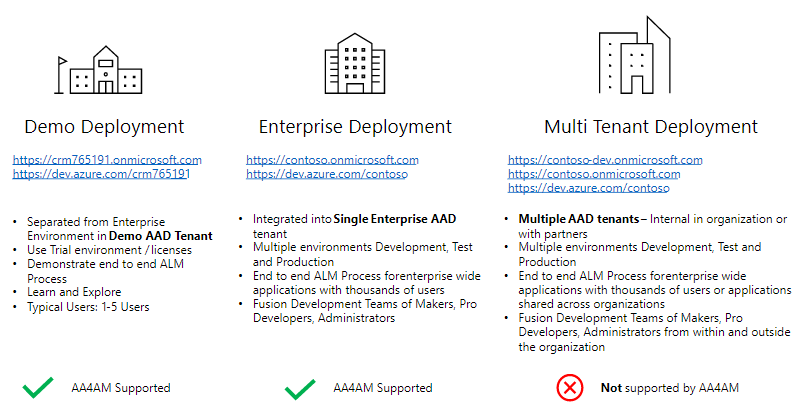

Once you have an install of the command line interface and it's pre-requisites you can review the following commands
Install - How to install the COE cli.
ALM Accelerator for Advanced Makers - Use CLI commands to setup and configure an environment for Advanced Makers to enable them to do more.
The COE CLI has been design to provide a set of commands that different personas across the organization can use to automate the process of installing COE components covering Azure, Azure DevOps and the Power Platform.

The COE CLI wraps existing CLI and APIs so that there is a set of commands that can be used to holistically automate the end to end Microsoft Solution deployment required by COE services.
Once installed can use -h argument to see help options
coe -h
Authentication for tasks is managed using the Azure CLI. Using standard az cli commands you can login, logout and select accounts. For example
az login
coe aa4am install -c add
az logoff
Further reading
The following captures the results of a sample local install

The following captures the results of a sample docker install on linux

Upgrade will depend on how you installed the COE cli
It you downloaded the COE CLI as a zip file or a git clone
OR
git pull
ONe you have a local version of the coe-cli change to coe-cli folder
cd coe-cli
In the coe-cli folder run the following commands
npm install
npm run build
npm link --force
In the coe-cli folder run the following commands
docker build -t coe-cli .
The ALM Accelerator for Advanced Makers (AA4AM) command allows you to manage common tasks for Advanced Makers.
Not sure what AA4AM is and how it can help? The main GitHub project README provides further context and examples of usage.
The diagram below provides an overview of the key components required and permissions required.

The following recording shows a sample generating a install configuration file and installing AA4AM using the config file using a Demo Deployment.

Review the Before You Start to ensure you have the required Power Platform environments and Azure DevOps organizations created
As an administrator complete the Admin Install
Have Advanced Makers create Development Environments
Use Maker Setup to create and setup environment and solution branches in the Azure DevOps repository.
Notes:
As you plan you ALM Accelerator for Advanced Makers (AA4AM) one or more of the following scenarios may apply to you.
Tenant Deployments - Discusses different Azure Active Directory configurations across Demo, Single AAD and Multiple AAD deployment models.
DevOps Deployment Model - Discuss the relationship between AA4AM deployments and one or more different Azure DevOps organizations.
AA4AM can be deployed in the following scenarios single demo tenant, single enterprise tenant.
Currently AA4AM does not support a multi tenant enterprise deployment model.

Does ALM for Low Code solutions introduce new concepts to parts of the business that has not been exposed to them before?
Would a demo environment deployment provide an environment allow the different personas to experiment and accelerate adoption of ALM processes?
Who will manage and operate the ALM process?
How will the maker community be expanded to adopt new ALM concepts?
What steps can be put in place to adopt a self service model to provision environments and move between validation, test and production environments.
In this scenario you are looking to quickly install AA4AM to demonstrate how it works and demonstrate the end to end process. For this scenario the following is expected.
Once you have the Admin Install completed Advanced makers can create Development environments and have Administrators add them to Azure DevOps and the required Azure Active Directory Security Group.
This will typically use the following commands as the single administrator
coe aa4am generate install -o test.json
coe aa4am install -f test.json
Then add a demo user as a maker
coe aa4am maker add -e https://alans-dev.crm.dynamics.com \
-o https://dev.azure.com/contoso-dev \
-p alm-sandbox \
-u alans@crm716415.onmicrosoft.com
Finally makers can then Setup Managed Solutions
In this scenario the aim is to install AA4AM inside an enterprise tenant and the following is expected.
The tenant administration team will need to create the following
To install the solution resources the following options can be used
coe aa4am install -c aad
{
"log": [
"info"
],
"components": [
"aad"
],
"aad": "ALMAcceleratorServicePrincipal",
"group": "ALMAcceleratorForAdvancedMakers",
"devOpsOrganization": "https://dev.azure.com/contoso-dev",
"project": "alm-sandbox",
"repository": "pipelines",
"settings": {
"installEnvironments": [
"validation",
"test",
"prod"
],
"validation": "https://sample-validation.crm.dyamics.com",
"test": "https://sample-test.crm.dyamics.com",
"prod": "https://sample-prod.crm.dyamics.com",
"createSecret": "true",
"region": [
"NAM"
]
},
"importMethod": "api",
"endpoint": "prod"
}
coe aa4am install -c devops \
-o https://dev.azure.com/contoso-dev \
-p alm-sandbox
coe aa4am install -f install.json
{
"log": [
"info"
],
"components": [
"environment"
],
"aad": "ALMAcceleratorServicePrincipal",
"group": "ALMAcceleratorForAdvancedMakers",
"devOpsOrganization": "https://dev.azure.com/contoso-dev",
"project": "alm-sandbox",
"repository": "pipelines",
"settings": {
"installEnvironments": [
"validation",
"test",
"prod"
],
"validation": "https://sample-validation.crm.dyamics.com",
"test": "https://sample-test.crm.dyamics.com",
"prod": "https://sample-prod.crm.dyamics.com",
"createSecret": "true",
"region": [
"NAM"
]
},
"importMethod": "api",
"endpoint": "prod"
}
This deployment type is involves different Azure Active Directory deployments that separate development, test and production systems. For example the following Azure Active Directory tenants
contoso.onmicrosoft.com
contoso-dev.onmicosoft.com
Currently the AA4AM installation does not support a multi-tenant deployment
The multi tenant deployment is assumed to have one or more of the following
Multiple Azure Active Directory tenants
Power Platform Environments for Development, Validation, Test and Production may be in different tenants.
The Azure DevOps environment may be in the Development tenant
Users of the main tenant my use Azure Business to Business authentication to access the development tenant
External users from outside the organization maybe invited to the development tenant and not have access to the main tenant
To support multi tenant deployments the Azure Active Directory application will need to be configured to support multi tenant authentication.
Further reading

As yoy play you DevOps deployment mode the following factors may help you decide the best approach:
Do different teams and / or business units require separate locations to store and manage solutions?
Cost / benefit of the overhead of managing and maintaining managing multiple DevOps process for different Power Platform Environments?
Do different teams or business units have differing levels of business sensitivity or data loss prevention that will require separate handling?
How will common shared assets be shared and managed between multiple teams? For example shared DevOps templates or Shared components.
Azure Active Directory security model. Will each team manage and maintain Active Directory Applications and Service Principals or will they be shared across different Power Platform environments and Azure DevOps organizations?
In this scenario the following is assumed:
Single Power Platform Advanced Maker Deployment with Shared Power Platform Environments for the Advanced Maker Canvas Application, Validation, Test and Production Environments
Single Shared Azure DevOps where all Advanced Makers collaborate on Solutions.
In this scenario the following is assumed:
Single Power Platform Advanced Maker Deployment with Shared Power Platform Environments for the Advanced Maker Canvas Application, Validation, Test and Production Environments
Multiple Azure DevOps for different teams or Business Units.
Each Azure DevOps organization can have a different set of users protected bu different Role Based Access Security Rules
Multiple pipelines can be defined and used at an Azure DevOps level that allow solutions to be deployed to different validation, test and production environments.
This scenario is not a recommended deployment model as is requires the deployment and management of multiple AA4AM deployments withing the organization.
In this scenario the following is assumed:
Multiple Power Platform Advanced Maker Deployment with Shared Power Platform Environments for the Advanced Maker Canvas Application, Validation, Test and Production Environments
Multiple Azure DevOps for different teams or Business UNits.
Each Azure DevOps organization can have a different set of users protected bu different Role Based Access Security Rules
Understanding the roles that different personas play in ALM Accelerator for Advanced Makers is important in helping you plan for and implement a AA4AM deployment in your organization.

The first command to run will will be the coe aa4am user add command that will register an Application User as System administrator in their development environment to integrate with the solution.
coe aa4am user add -e https://mydevorg.crm.dynamics.com
The coe aa4am branch command will be run each time a new solution is created. This command allows a new solution branch to be created in Azure DevOps with the associated ALM DevOps pipeline to validate pull requests and push changes to test and production environments.
coe aa4am branch -o https://dev.azure.com/contoso -p alm-sandbox -d MySolution
As each Advanced Maker or Professional Developer creates a development environment it will need to be registered with Azure DevOps and the Azure Active Directory Application. THe user running this command requires Project Administrator rights in Azure DevOps and Owner rights of the Azure Active Directory Application.
coe aa4am maker add -o https://dev.azure.com/contso -p alm-sandbox \
-e https://contoso-userdev.crm.dynamics.com -a aa4am-ado-service-principal \
-g aa4am-makers -u user@contoso.com
Each Azure DevOps project will also require connections to deployment environments used by Azure DevOps pipelines
coe aa4am connection add -o https://dev.azure.com/contso -p alm-sandbox \
-e https://contoso-build.crm.dynamics.com -a aa4am-ado-service-principal
coe aa4am connection add -o https://dev.azure.com/contso -p alm-sandbox \
-e https://contoso-test.crm.dynamics.com -a aa4am-ado-service-principal
coe aa4am connection add -o https://dev.azure.com/contso -p alm-sandbox \
-e https://contoso-prod.crm.dynamics.com -a aa4am-ado-service-principal
To deploy an instance of AA4AM in your organization the coe aa4am generate install and coe aa4am install commands are used once to deploy the Managed solution. The install will automate key elements
coe aa4am generate install -o install.json
coe aa4am install -f install.json
Business Users - Licensed internal users of the created solutions. Will not directly use the AA4AM tools they will be able to see the shared applications. May report version number of application to the support team.
Maker - Wants to use components or services produced by an advanced maker or professional developer. Uses off the shelf components and documentation. Not directly exposed to the Application Lifecycle as this process is abstracted away. Create and Share the Application with Business Users.
Advanced Maker - Collaborates with Professional Development and IT teams to integrate and build applications. Assumed to be familiar with concepts like ALM, DevOps, Branching and Merging. Work in Development environment and push changes into validation and testing and production environments. Works with managed Canvas management application and Azure DevOps website. Common commands
Professional Developer - Advanced maker knowledge plus the ability to use lower level development programing languages and SDKs to create components and services. For example JavaScript and PCF controls, Dataverse Plugins in C#, Azure Services and APIs e.g. Azure functions, API Management. LIkely to work in tools like Visual Studio Code. Common commands
Data Analyst - Develop data model, Create and manage data services and post data collection analysis / reporting. For example Power BI reporting, Datalake. For data elements that are covered in the SOlution system e.g. Dataverse Modeling, AI Models. Items not covered today in solution system today like Power BI will have separate ALM process. Common commands
Operations Teams - Deploy solution to environments across Power Platform and Microsoft Cloud Services (e.g. Azure). Distribute solutions into Power Platform and run ARM templates in Azure. Will not use the CLI commands directly. May use managed canvas application to view and Azure DevOps pipelines to view the status or and promote applications from test to production.
Support Teams - Post application deployment look at version of applications deployed, triage issues. May use managed canvas application to view deployed solution versions.
Information Security Team - Will compare against organization standards for Data Loss Prevention (DLP), Authentication and Authorization, Service Principals, Teams and Security. Review the ALM process against Threat models, risks and mitigations.
Architecture Team - Review the entire ALM process and components and verify matches solution methodology and architecture
Administrators
coe aa4am generate install -o data.json
coe aa4am install -f data.json
coe aa4am generate install -o data.json
coe aa4am install -c environment -e https://contoso-maker.crm.dynamics.com
Add makers to an environment (Assuming they also have Azure DevOps Administrator rights)
coe aa4am maker add -e https://user-Dev.crm.dynamics.com \
-o https://dev.azure.com/dev12345 \
-p alm-sandbox \
-u user@contoso.com
Azure Tenant Administrator Manage the AAD Tenant - Create User, Groups, Applications and Service Principals (O365 or Azure Administrators). Common commands
coe aa4am install -c aad
Azure DevOps Organization Administrators
Azure DevOps Project Administrators
coe aa4am install -c devops -o https://dev.azure.com/dev12345 -p alm-sandbox
As you deploy and use the AA4AM CLI it is important to understand the following key concepts that the CLI is automating.
The CLI application can create a Azure Active Directory application that automate the following key steps.
User authenticated via Azure CLI
Create Azure Active Directory Application using Azure CLI
Grant Tenant Consent for Applications using Azure CLI
Azure Application Granted rights via manifest config to call
Client secrets will be created for Azure DevOps Service Connections
Client secrets should have an established key rotation process to generate new keys for connections
After new keys are generated old keys should be removed
The CLI application can create a Azure Active Directory group that is used for Azure DevOps and Power Platform authentication and role based access security.
The CLI application assumes that an Azure DevOps organization and project have already been created. it performs the following key steps
Source reference devops.ts - DevOpsCommand
Install Azure DevOps Extensions defined in AzureDevOpsExtensionsDetails.json (Source reference - installExtensions)
Clone Azure Templates https://github.com/microsoft/coe-alm-accelerator-templates.git into a Azure DevOps git repository named pipelines by default (Source reference - importPipelineRepository).
Create Azure DevOps build pipelines (Source reference - createAdvancedMakersBuildPipelines)
export-solution-to-git.yml - Export a solution from a Dataverse environment and commit it to a git branch.
import-unmanaged-to-dev-environment.yml - Import solution into Dataverse environment
delete-unmanaged-solution-and-components.yml - Delete or "clean up" an unmanaged solution from a Dataverse environment
Setup Azure Active Group access the Azure DevOps project (Source reference - setupSecurity)
Create Variable Groups for shared variables used by build pipelines (Source reference - createAdvancedMakersBuildVariables)
Create Service connections to Power Platform Environments Source reference - createAdvancedMakersServiceConnections) using the Azure Active Directory Service Principal
NOTE: Each service connection will receive a separate Azure Active Directory secret.
The coe aa4am branch command performs the following steps
Create a new branch to store the Solution (Source code reference branch function)
Create build pipelines for the Solution Branch (Validation, Test, Production)
Create Branch Policies to ensure validation build completes successfully
In addition to install automation the following concepts are also assumed for Advanced Makers
The AA4AM assumes a branch per solution
Changes merged back into main branch can be promoetd to production evironment
The CLI provides the following key steps. (Source code file powerplatform.ts)
Import Managed solution into environment to allow Advanced Makers to Manage git import, create branches, pull requests and updates to test and production.
Fix Custom Connectors used to connect to Azure DevOps
Connect Flow to Dataverse
Add the user to the Azure Active Directory Service Principal to the power platform environments
Share the Canvas application with the Maker Azure Active Directory Group
The AA4AM CLI commands currently assume the following environments have been created https://aka.ms/ppac as a Global Administrator or Environment Administrator
Maker Environment
Require Dataverse to be enabled
Created "Microsoft Dataverse (legacy)" connection - Read More
Validation, Test, Production Environments
Developer Environments
Before you start an install of AA4AM ensure that you have the following in place
Install the COE CLI locally or via a docker image
| Environment | Description |
|---|---|
| ALM Environment | Environment with Dataverse enabled. Will be used to deploy managed solution. |
| ALM Environment - Dataverse Connection | See Maker Environment Dataverse below to create the Dataverse Connection |
| Validation | Environment used to validate builds before merging into a solution branch |
| Test | Pre production Environment used to test solutions before moving to production |
| Production | Production Environment for managed solutions |
Notes:
As a Microsoft Partner you can request access to demo tenants to test ALM Accelerators for Advanced Makers
Sample environment from https://admin.powerplatform.microsoft.com/environments for a Demo Deployment

In the maker environment you will a Dataverse connection to be created by install user.
This can be done using the following steps
Goto https://make.powerapps.com/
Select your maker environment that you will deploy the ALM Accelerator for Advanced Makers into
Navigate to Data -> Connections
New Connection
Microsoft Dataverse (legacy)
Select Create
Ensure the user you run with has the the following permissions
| Component | Description |
|---|---|
| Global Administrator or Privileged Role Administrator | Grant tenant-wide admin consent to an application Read More |
| Component | Description |
|---|---|
| Organization | Review Add Organization Users to create Azure DevOps organization and add users |
| Project | An Azure DevOps project to integtrate with. This guide uses the name alm-sandbox as the project name |
| Extensions | Review the extensions configuration that will be installed |
| Repository | Ensure the git repository has been initialized with an initial commit |
Notes:
If installing using demo tenant you can request a trial Azure DevOps environment
https://azure.microsoft.com/en-us/services/devops/
Create Organization
Create initial project e.g. alm-sandbox
Review the Azure DevOps Extensions that will be installed by the CLI application to ensure your organization gives consent for them to be installed.
Once you have verified the above
To complete the initial steps of an AA4AM deployment you will need to complete the administrative tasks. Once this is done Advances Makers can create and register development environments.

Assuming a single user that has Power Platform Global Administrator, DevOps Administrator rights and Azure Active directory Administrator rights the install process has the following main sections below.
Complete Before You Start to ensure that:
A) Power Platform Environments have been created
B) Azure DevOps Organization and Project has been created
C) COE CLI installed
coe aa4am generate install -o test.json
Which will generate a file similar to
{
"log": [
"info"
],
"components": [
"all"
],
"aad": "ALMAcceleratorServicePrincipal",
"group": "ALMAcceleratorForAdvancedMakers",
"devOpsOrganization": "https://dev.azure.com/dev1234",
"project": "alm-sandbox",
"repository": "pipelines",
"settings": {
"installEnvironments": [
"validation",
"test",
"prod"
],
"validation": "https://sample-validation.crm.dyamics.com",
"test": "https://sample-test.crm.dyamics.com",
"prod": "https://sample-prod.crm.dyamics.com",
"createSecret": "true",
"region": [
"NAM"
]
},
"importMethod": "api",
"endpoint": "prod"
}
coe aa4am install -f test.json
Each advanced maker will need a development environment created. Advanced makers can use a community environment to work in. Community environments can be accessed from the sign-up page https://web.powerapps.com/community/signup
As Azure DevOps Administrator you will need to register each advanced maker environment. The following command will add the required service connection to development environment and setup security for the user
coe aa4am maker add -o https://dev.azure.com/dev12345 \
-p alm-sandbox \
-e https://org12345-dev.crm.dynamics.com \
-u username@contoso.com
Once a user has been setup with a development environment Read More they will need to use the following sections to provide access to the service principal and create a solution branch.
The Azure DevOps Pipeline uses a Azure Active Directory service principal to connect to the development environment and import and export the solution. To enable access to the environment the following command will add the service principal as a System Administrator to the developer Power Platform environment.
az logout
coe aa4am user add -e https://org12345-dev.crm.dynamics.com
Once the environment has been setup and your development environment created and registered as a service connection in Azure DevOps you can use the following steps to create a source control managed solution.
Switch to Developer Environment
Create new solution e.g. NewSolution1
Add items to the solution. For example a. Select Solution b. Add Canvas Application c. Add Button d. Save Application and Close
Create Solution branch using the following CLI command
coe aa4am branch -o https://dev.azure.com/dev12345 -p alm-sandbox -d MySolution1
NOTES:
-o is the name of your DevOps Organization
-p is the name of the Azure DevOps Project
-d os the name of the solution branch to create
If the repository you want to create a branch for is empty you will need to commit an initial commit before a branch can be created.
Open ALM Accelerator for Advanced Maker Application
Select Push change to Git a. Create New Branch e.g. MySolution1-WIP b. From existing Solution Branch created above e.g. MySolution1 c. Add a comment e.g. Initial version
Click on Latest Push Status a. Permit permissions for pipeline to run (Variable Group, Service Connection, Pipeline)
After setting up an advanced maker you may need to verify the following
If this is your first branch created you will need to check variables applied for the the created pipeline
The first time that each pipeline is run frm the administration application you will need to open the pipeline in Azure DevOps and approve the resources used by the pipeline.
Select the blue icon for the Azure DevOps Build in the application

Check if is message similar to the following that requires approval of the pipeline to run

If required select "View" and permit the build pipeline to

NOTES:
You can install all pre-requites if you are installing to a Dmo tenant or you have rights to Azure Active Directory, Azure DevOps and Power Platform System Administrator rights.
You can start by generating a configuration file for you install using the following command
coe aa4am generate install -o test.json
This will ask you a series of questions for the values which you can then edit and review before starting install
{
"log": [
"info"
],
"components": [
"all"
],
"aad": "ALMAcceleratorServicePrincipal",
"group": "ALMAcceleratorForAdvancedMakers",
"devOpsOrganization": "https://dev.azure.com/dev1234",
"project": "alm-sandbox",
"repository": "pipelines",
"settings": {
"installEnvironments": [
"validation",
"test",
"prod"
],
"validation": "https://sample-validation.crm.dyamics.com",
"test": "https://sample-test.crm.dyamics.com",
"prod": "https://sample-prod.crm.dyamics.com",
"createSecret": "true",
"region": [
"NAM"
]
},
"importMethod": "api",
"endpoint": "prod"
}
To start an install with you configured settings you can use thw following.
coe aa4am install -f test.json
Install aad, DevOps and environment components using the default parameters
coe aa4am install -e https://contoso-maker.crm.microsoft.com \
-o https://dev.azure.com/dev12345 \
-p alm-sandbox
Will install Managed application the AAD application and Azure DevOps components
To install just the Azure Active Directory components using the default parameters
coe aa4am install -c aad
Will login using the Azure CLI user and attempt to install the Azure Active Directory application required for Azure DevOps and the Application User that wil be used to interact Power Platform environments.
To install just the DevOps components you can run the following command. This step assumes the Azure Active Directory Service Principal has been created
coe aa4am install -c devops -o https://dev.azure.com/dev12345 -p alm-sandbox
Steps by performed by the command:
Install the Managed Solution to administer the application. This step assumes that Azure Active Directory and Azure DevOps components have been created.
coe aa4am install -c environment -e https://org12345-dev.crm.microsoft.com
Steps by performed by the command:
For each developer environments you create you will need to create a service connection from Azure DevOps to the environment
coe aa4am maker add -o https://dev.azure.com/dev12345 \
-p alm-sandbox \
-e https://org12345-dev.crm.microsoft.com \
-u name@contoso.com
Notes:
Each environment that the solution imports and exports from needs the Azure Active Directory application added as an Application user
coe aa4am user add -e https://org12345-dev.crm.microsoft.com \
-a ALMAcceleratorServicePrincipal
Notes:
One setup you can create a solution branch and the associated Azure DevOps Pipelines
coe aa4am branch -o https://dev.azure.com/dev12345 \
-p alm-sandbox \
-d MyTestSolution
-o is the devops organization name -p is the Azure DevOps project -d is the destination branch to create as import the build pipelines
More help is available from
coe aa4am branch --help
This document outlines the following key sections on the COE CLI. The information below can help guide you in making contributions back to the open source repository.
Quick Start - Provides set of links of the technology used to build and test the CLI
Contributions - Links to wider contributor guidance
Development Environment Setup - How to edit the CLI using Visual Studio Code
Adding A New Command - How to add a new CLI command
Documentation - Adding documentation for commands
The coe-cli command line application makes use of following components
If you are new to TypeScript the following links may help
If you are new to unit testing with Jest you can start with
Review review the general Contribution Guidance.
You can edit and debug the cli using Visual Studio Code
If you do not have Visual Studio Code you can visit visit https://code.visualstudio.com/Download
Once installed Open the coe-cli folder in Visual Studio Code
The .vscode\launch.json file contains a pre configured debug launch command
You can edit the sample.json file to the commands that you want to debug
Place breakpoints in the TypeScript files you want to debug and Press F5 to start debugging
NOTES:
Depending on the command you want to debug you mey be prompted to login in the DEBUG CONSOLE
If you are testing with a different account you will need to log out of any existing Azure CLI sessions
az logout
You can debug the coe-cli application commands using Visual Studio Code.
Documentation is key to understanding how the cli works. As new commands are added consider the folowing
Add new pages to docs that describes the new command and how it is expected to be used.
Consider adding the following to the page
To include a short animated recording of commands and the expected output you can use the following process
A. Install termtosvg in a unix terminal
pip3 install --user termtosvg
This process will work cross platform and any of the following options could be used:
i) Native unix shell on MacOs or Linux distributions
ii) Docker images with a unix shell
iii) Windows Subsystem for Linux on Windows
B. Record the session to a cast file
termtosvg record test.cast
The generated cast file is a simple text file that can be edited with any text editor.
C. Remove pauses using term-trim.ps1
./term-trim.ps1 -Input test.cast -Output test2.cast -Trim 1
D. Generate the svg file
termtosvg render test2.cast test.svg -t window_frame
To add a new sample command you can use the following command to template the initial setup of the TypeScript command and the jest unit test.
cd coe-cli
coe cli add -n sample
One you have unit test completed for your new command
Review https://www.npmjs.com/package/commander on commands, options
Update commands.ts to include a new command or sub command
import { SampleArguments, SampleCommand} from './sample';
createSampleCommand: () => SampleCommand
this.createSampleCommand = () => new SampleCommand
AddSampleCommand(program: commander.Command) {
var run = program.command('sample')
.description('A new sample command')
.option('-c, --comment <comment>', 'The comment for the command')
.action(async (options: any) : Promise<void> => {
let args = new SampleArguments();
args.comment = options.comment;
let command = this.createSampleCommand();
await command.execute(args)
});
}
this.AddSampleCommand(program);
import { SampleCommand } from '../../src/commands/sample'
describe('Sample', () => {
test('Execute', async () => {
// Arrange
var commands = new CoeCliCommands();
let mockSampleCommand = mock<SampleCommand>();
commands.createSampleCommand = () => mockSampleCommand
mockSampleCommand.execute.mockResolvedValue()
// Act
await commands.execute(['node', 'commands.spec', 'sample', '-c', 'Some comment'])
// Assert
expect(mockSampleCommand.execute).toHaveBeenCalled()
})
});
npm run test
```<p id="install.md" class="next_file"></p>
# Installation
To install the COE CLI
1. Download zip or clone repository
2. Change to unzipped or cloned repository
3. cd coe-cli
```bash
cd coe-cli
Next select either Local Install or Docker Install
To run the COE CLI application you will require the following
To check prerequisites installed at the command prompt
node --version
az --version
npm install
npm run build
npm link
NOTE:
On Windows you may need to add %APPDATA%\npm to your PATH environment variable to access the coe command
Install Azure CLI. Follow install instructions for you operating system at https://docs.microsoft.com/en-us/cli/azure/install-azure-cli
One method of installation is via docker.
To run the COE CLI application you will require the following
NOTE: Note on some operating systems you may need to use sudo before each of the docker commands.
cd coe-cli
docker build -t coe-cli .
docker run -it --rm coe-cli
This will start a new interactive console (-it) and remove the docker container (--rm) when the console session exits. Using --rm ensures that any cached credentials are removed when you exit.